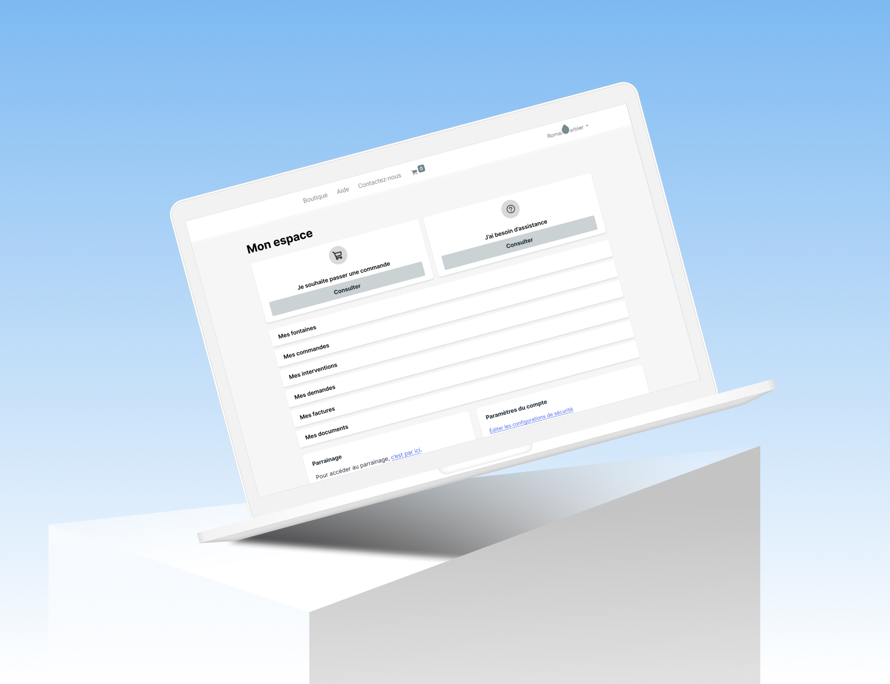
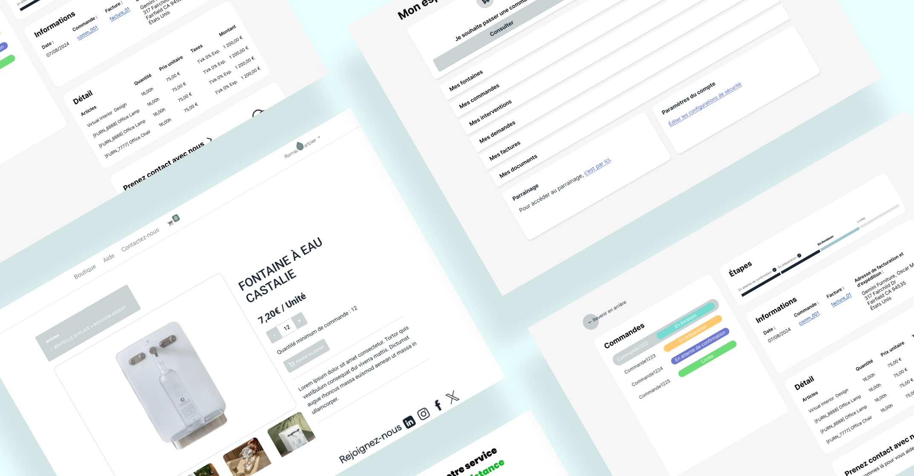
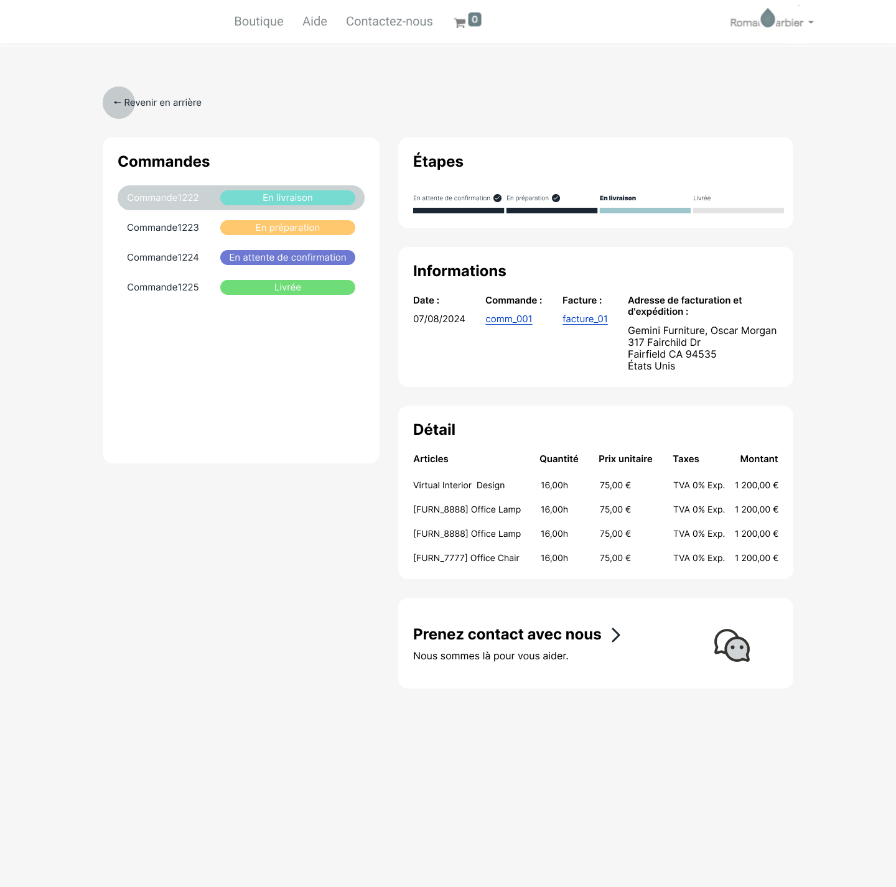

Espace client Fontaines à eau
Concevoir un espace client sobre et fonctionnel sur Odoo pour une entreprise française de fontaines à eau éco-conçues — permettant aux clients de gérer commandes, interventions et équipements en un seul endroit.
Le projet
Une entreprise française spécialisée dans les fontaines à eau microfiltrées éco-conçues propose à ses clients professionnels (hôtels, restaurants, entreprises) un abonnement tout-inclus : location de fontaine, maintenance, livraison de bouteilles en verre et interventions techniques sur site. Pour centraliser la gestion de cette relation client post-vente, il fallait concevoir un espace client intégré directement dans leur ERP Odoo.
→ Interface sobre et native, sans développements lourds hors du framework
→ Le client visualise ses fontaines, leur état et les prochaines interventions

Designer dans un cadre contraint —
Odoo v12/v14
Odoo impose un framework visuel strict : composants natifs, grille définie, peu de latitude sur les styles. Le défi n'était pas de créer une interface spectaculaire, mais de concevoir une architecture d'information claire et des parcours fluides dans les limites du système.
Ce que ça implique concrètement
Pas de composants custom, pas de CSS arbitraire — le travail de design se concentre sur la structure des vues, la hiérarchie des informations, le choix des widgets natifs et la logique de navigation entre les modules.
Le Back-office Odoo — En V12/V14, la conception d'un back-office sur Odoo est sobre et structurée. Des rubriques, des lignes, quelques fonctionnalités — tout en intégrant les fonctionnalités les plus cruciales pour l'utilisateur : historique d'interventions, factures, historique de commandes.
Six modules, un accès immédiat à l'essentiel
L'espace client a été structuré autour de six modules correspondant aux besoins réels des clients en abonnement — de la boutique de consommables au suivi des interventions techniques sur leurs fontaines.
Mes commandes
Suivi des commandes en cours avec statut (en attente, en préparation, en livraison, livrée) et accès aux factures associées.
Mes interventions
Historique et suivi des interventions techniques — planifiées, en cours ou terminées — avec rapport téléchargeable et contact technicien.
Factures & documents
Accès centralisé aux factures, contrats et documents administratifs liés à l'abonnement.
Contact & assistance
Formulaire de contact contextuel avec choix du sujet — disponible depuis chaque module pour une demande rapide.

Une boutique B2B pensée pour la commande récurrente
Les clients commandent régulièrement les mêmes consommables — bouteilles 33cl, 55cl ou 77cl, bouchons, bonbonnes de CO2. Le catalogue devait être navigable rapidement avec un système de catégories clair et une fiche produit sobre mettant en avant la quantité minimum de commande.
Disponible pour de nouveaux projets